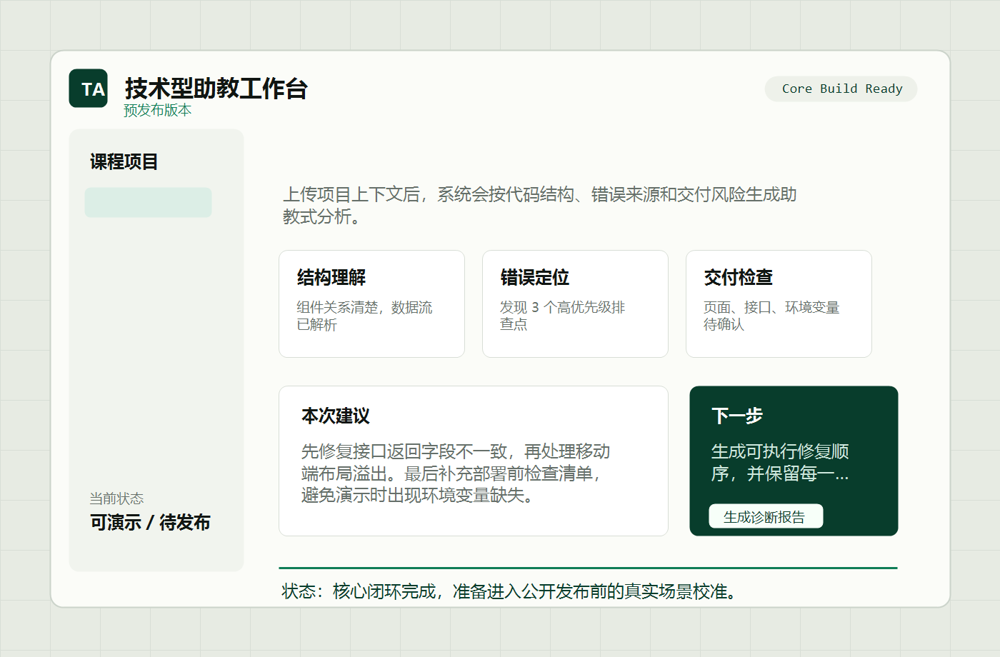

已经做出来
核心流程和产品界面已完成，当前重点是体验打磨，下一步准备公开发布。
About Me
我在学校读书，喜欢打排球和做手工，也会使用很多 AI 工具，
比如 Codex 和 Bolt。

核心流程和产品界面已完成，当前重点是体验打磨，下一步准备公开发布。
拆开组件、接口、状态和数据流，让代码不再只是能运行。
从报错、复现、依赖和环境入手，快速缩小问题范围。
关注页面完成度、接口连通性、部署准备和展示效果。
留下判断过程，让下一次同类问题能自己处理。